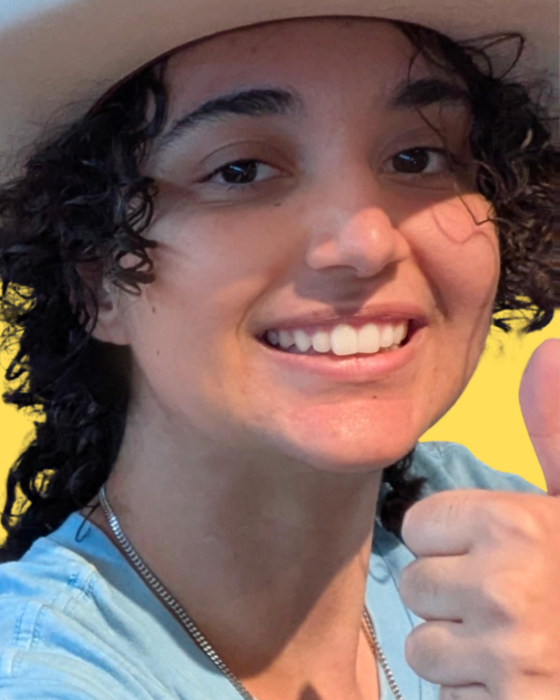
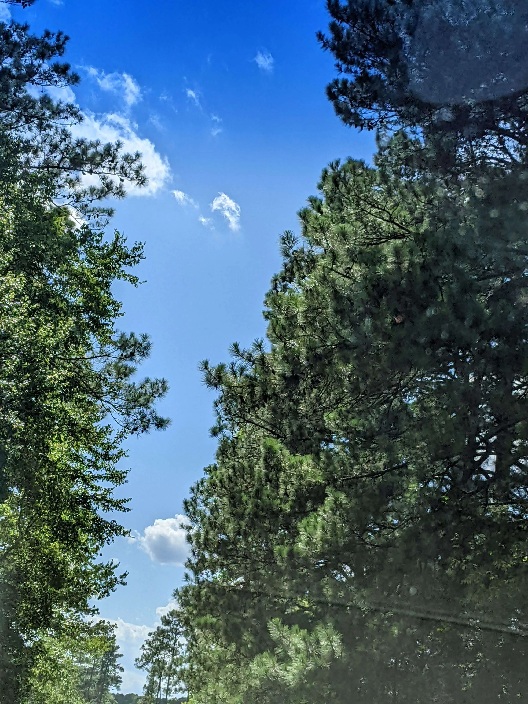
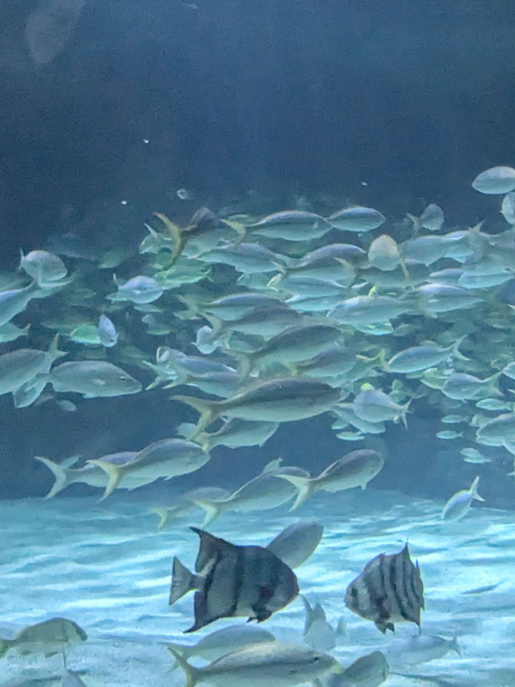

About Amodino



Hi
I'm often asked "What does Amodiño mean?" It's a silly word I use, meaning to "go slowly" and enjoy the little things. I find that these ideals clash with the current status quo of IT, which is exactly why I want to encompass that feeling in my work. Accessible, holistic UX/UI design that allows the user to slow down and take their time. My goal is to help a business not be afraid of letting their brand's personality shine through!
Amodiño's brand focuses on balancing personality with usability, making sure every project feels memorable while still being fast, responsive, and easy to navigate.
FAQ
My Credentials
I am currently finishing my associate's degree and actively looking for a permanent role, training opportunity, or internship in UX/UI design. Along the way, I earned the Google Coursera Web UX Designer certificate, and I was recognized for maintaining a high GPA at WTCC in both spring and fall 2024 with a seat in Phi Theta Kappa National Honor Society. I also accepted the Coca-Cola Leaders of Promise scholarship award from my local chapter in 2025.
My Skills
During my internships, I spent a lot of time working in Adobe CC, Figma, and CRM tools, which helped me build a strong design foundation in illustration, layout, and user-centered thinking. As I continue my education, I am also growing my front-end confidence with HTML, CSS, and other coding languages used in the field.
My Mission
At the core of my work, I want users to feel comfortable, supported, and included, especially people with different accessibility needs. I believe great UX can be both personalized and simple to use, and no one should be left behind. Founding Raleigh's St. Joseph's Coffee Run volunteering community also taught me a lot about advertising, community management, and quick problem-solving.
My Contacts
Feel free to reach out anytime. I am always happy to talk about job opportunities, make new connections, or just have a chat. You can contact me directly at perlin.amodino@gmail.com or connect with me on LinkedIn.